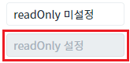
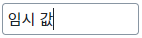
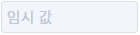
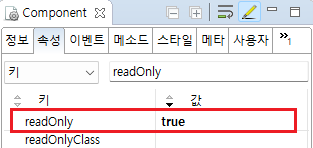

Input의 'readOnly' 속성와 'setReadOnly' 메소드를 사용하여 읽기 전용 상태를 설정하는 예제입니다.
'readOnly' 속성은 입력 필드를 읽기 전용으로 설정하는 기능을 제공합니다. 이 속성이 true로 설정되면 사용자는 해당 필드의 값을 입력할 수 없습니다.
'setReadOnly' 메소드는 'readOnly' 속성의 값을 설정하는 기능을 제공합니다.
속성으로 'readOnly' 설정하기
스크립트로 'readOnly' 설정하기
1
STEP 1: 실행된 결과를 확인합니다.
예제 영역 '속성으로 'readOnly' 설정하기'의 Input을 확인합니다.
'readOnly' 속성이 'true'로 설정된 경우는 입력 필드에 값을 입력할 수 없습니다.첫 번째 Input은 값을 입력할 수 있고, 두 번째 Input은 값을 입력할 수 없습니다.
Image 1.브라우저(Chrome) 실행 예시

1
STEP 1: 초기 상태를 확인합니다.
예제 영역 '스크립트로 'readOnly' 설정하기'의 Input을 확인합니다.
'readOnly' 속성이 'false'로 설정된 상태로 입력 필드에 값을 입력할 수 있습니다.Image 2.브라우저(Chrome) 실행 예시

2
STEP 2: 스크립트로 'readOnly'를 설정합니다.
"'readOnly' 설정하기" 버튼을 클릭합니다. Input의 'readOnly' 속성이 'false'로 설정됩니다.3
STEP 3: 실행된 결과를 확인합니다.
입력 필드에 값을 입력할 수 없습니다.
Image 3.브라우저(Chrome) 실행 예시

4
STEP 4: 스크립트로 'readOnly'를 해제합니다.
"'readOnly' 해제하기" 버튼을 클릭합니다. Input의 'readOnly' 속성이 'true'로 설정됩니다.5
STEP 5: 실행된 결과를 확인합니다.
입력 필드에 값을 입력할 수 있습니다.
Image 4.브라우저(Chrome) 실행 예시
1
Input의 속성을 설정합니다.
[필수] readOnly="true"
(옵션 설명)
true : 입력 필드를 읽기 전용 상태로 설정합니다.
false : [default] 입력 필드에 값을 입력할 수 있습니다.
Image 5.웹스퀘어 스튜디오의 Component View - 속성 설정 예시

Example 1.Source
<!-- Input 의 소스 본문 예시 --> <xf:input readOnly="true"> </xf:input>
1
스크립트를 작성합니다.
Input의 'setReadOnly' 메소드를 사용하여 스크립트를 작성합니다. 세부 설정은 아래의 스크립트 예시에 작성되어 있습니다.
Example 2.Script
//예제 파일에서는 스크립트 'scwin.btn_exam1_1_onclick'에 작성되어 있습니다. // Input 'ibx_exam1'의 'readOnly' 속성의 설정 값을 true로 지정합니다. 'readOnly'가 활성화됩니다. ibx_exam1.setReadOnly(true);
readOnly
setReadOnly( readOnly )